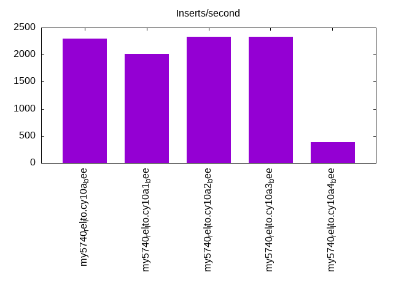
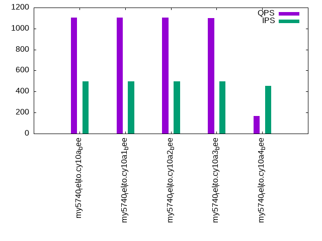
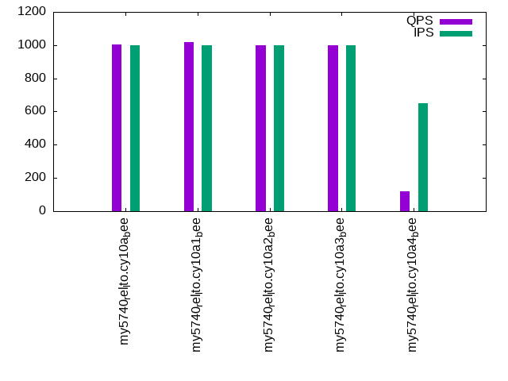

Introduction
This is a report for the insert benchmark with 800M docs and 1 client(s). It is generated by scripts (bash, awk, sed) and Tufte might not be impressed. An overview of the insert benchmark is here and a short update is here. Below, by DBMS, I mean DBMS+version.config. An example is my8020.c10b40 where my means MySQL, 8020 is version 8.0.20 and c10b40 is the name for the configuration file.
The test server has 8 AMD cores, 16G RAM and an NVMe SSD. It is described here as the Beelink. The benchmark was run with 1 client and there were 1 or 3 connections per client (1 for queries or inserts without rate limits, 1+1 for rate limited inserts+deletes). There is 1 table. It loads 800M rows without secondary indexes, creates secondary indexes, then inserts 10M rows with a delete per insert to avoid growing the table. It then does 3 read+write tests for 3600s each that do queries as fast as possible with 100, 500 and then 1000 inserts/second/client concurrent with the queries and 1000 deletes/second to avoid growing the table. The database is larger than memory.
The tested DBMS are:
- my5740_rel_lto.cy10a_bee - InnoDB and MySQL 5.7.40, rel_lto build, cy10a_bee config, compiled with CMAKE_BUILD_TYPE=Release, base config
- my5740_rel_lto.cy10a1_bee - InnoDB and MySQL 5.7.40, rel_lto build, cy10a1_bee config, compiled with CMAKE_BUILD_TYPE=Release, adds innodb_use_native_aio=off
- my5740_rel_lto.cy10a2_bee - InnoDB and MySQL 5.7.40, rel_lto build, cy10a2_bee config, compiled with CMAKE_BUILD_TYPE=Release, adds innodb_io_capacity=20k, innodb_io_capacity_max=40k
- my5740_rel_lto.cy10a3_bee - InnoDB and MySQL 5.7.40, rel_lto build, cy10a3_bee config, compiled with CMAKE_BUILD_TYPE=Release, adds innodb_io_capacity=20k, innodb_io_capacity_max=40k, innodb_flush_sync=OFF
- my5740_rel_lto.cy10a4_bee - InnoDB and MySQL 5.7.40, rel_lto build, cy10a4_bee config, compiled with CMAKE_BUILD_TYPE=Release, adds innodb_flush_method=fsync
Contents
- Summary
- l.i0: load without secondary indexes
- l.x: create secondary indexes
- l.i1: continue load after secondary indexes created
- q100.1: range queries with 100 insert/s per client
- q500.1: range queries with 500 insert/s per client
- q1000.1: range queries with 1000 insert/s per client
Summary
The numbers are inserts/s for l.i0 and l.i1, indexed docs (or rows) /s for l.x and queries/s for q100, q500, q1000. The values are the average rate over the entire test for inserts (IPS) and queries (QPS). The range of values for IPS and QPS is split into 3 parts: bottom 25%, middle 50%, top 25%. Values in the bottom 25% have a red background, values in the top 25% have a green background and values in the middle have no color. A gray background is used for values that can be ignored because the DBMS did not sustain the target insert rate. Red backgrounds are not used when the minimum value is within 80% of the max value.
| dbms | l.i0 | l.x | l.i1 | q100.1 | q500.1 | q1000.1 |
|---|---|---|---|---|---|---|
| my5740_rel_lto.cy10a_bee | 80718 | 109154 | 2292 | 960 | 1106 | 1002 |
| my5740_rel_lto.cy10a1_bee | 81641 | 108768 | 2017 | 939 | 1106 | 1017 |
| my5740_rel_lto.cy10a2_bee | 81883 | 109648 | 2327 | 935 | 1102 | 1001 |
| my5740_rel_lto.cy10a3_bee | 82001 | 109874 | 2326 | 930 | 1101 | 1001 |
| my5740_rel_lto.cy10a4_bee | 70584 | 99502 | 380 | 288 | 166 | 119 |
This table has relative throughput, throughput for the DBMS relative to the DBMS in the first line, using the absolute throughput from the previous table. Values less than 0.95 have a yellow background. Values greater than 1.05 have a blue background.
| dbms | l.i0 | l.x | l.i1 | q100.1 | q500.1 | q1000.1 |
|---|---|---|---|---|---|---|
| my5740_rel_lto.cy10a_bee | 1.00 | 1.00 | 1.00 | 1.00 | 1.00 | 1.00 |
| my5740_rel_lto.cy10a1_bee | 1.01 | 1.00 | 0.88 | 0.98 | 1.00 | 1.01 |
| my5740_rel_lto.cy10a2_bee | 1.01 | 1.00 | 1.02 | 0.97 | 1.00 | 1.00 |
| my5740_rel_lto.cy10a3_bee | 1.02 | 1.01 | 1.01 | 0.97 | 1.00 | 1.00 |
| my5740_rel_lto.cy10a4_bee | 0.87 | 0.91 | 0.17 | 0.30 | 0.15 | 0.12 |
This lists the average rate of inserts/s for the tests that do inserts concurrent with queries. For such tests the query rate is listed in the table above. The read+write tests are setup so that the insert rate should match the target rate every second. Cells that are not at least 95% of the target have a red background to indicate a failure to satisfy the target.
| dbms | q100.1 | q500.1 | q1000.1 |
|---|---|---|---|
| my5740_rel_lto.cy10a_bee | 100 | 499 | 998 |
| my5740_rel_lto.cy10a1_bee | 100 | 498 | 998 |
| my5740_rel_lto.cy10a2_bee | 100 | 499 | 998 |
| my5740_rel_lto.cy10a3_bee | 100 | 499 | 998 |
| my5740_rel_lto.cy10a4_bee | 92 | 456 | 652 |
| target | 100 | 500 | 1000 |
l.i0
l.i0: load without secondary indexes. Graphs for performance per 1-second interval are here.
Average throughput:

Insert response time histogram: each cell has the percentage of responses that take <= the time in the header and max is the max response time in seconds. For the max column values in the top 25% of the range have a red background and in the bottom 25% of the range have a green background. The red background is not used when the min value is within 80% of the max value.
| dbms | 256us | 1ms | 4ms | 16ms | 64ms | 256ms | 1s | 4s | 16s | gt | max |
|---|---|---|---|---|---|---|---|---|---|---|---|
| my5740_rel_lto.cy10a_bee | 0.333 | 99.336 | 0.193 | 0.136 | 0.002 | 0.142 | |||||
| my5740_rel_lto.cy10a1_bee | 0.565 | 99.103 | 0.197 | 0.132 | 0.002 | 0.124 | |||||
| my5740_rel_lto.cy10a2_bee | 0.719 | 98.953 | 0.189 | 0.137 | 0.002 | 0.128 | |||||
| my5740_rel_lto.cy10a3_bee | 0.745 | 98.925 | 0.192 | 0.136 | 0.002 | 0.128 | |||||
| my5740_rel_lto.cy10a4_bee | 0.354 | 97.452 | 2.040 | 0.152 | 0.002 | 0.113 |
Performance metrics for the DBMS listed above. Some are normalized by throughput, others are not. Legend for results is here.
ips qps rps rmbps wps wmbps rpq rkbpq wpi wkbpi csps cpups cspq cpupq dbgb1 dbgb2 rss maxop p50 p99 tag 80718 0 0 0.0 406.9 29.0 0.000 0.000 0.005 0.368 9027 21.4 0.112 21 52.6 93.1 10.9 0.142 81010 71080 800m.my5740_rel_lto.cy10a_bee 81641 0 0 0.0 411.1 29.3 0.000 0.000 0.005 0.368 8832 21.5 0.108 21 52.6 93.1 10.9 0.124 81808 72220 800m.my5740_rel_lto.cy10a1_bee 81883 0 0 0.0 412.7 29.4 0.000 0.000 0.005 0.368 9123 21.3 0.111 21 52.6 93.1 10.9 0.128 82211 71887 800m.my5740_rel_lto.cy10a2_bee 82001 0 0 0.0 412.9 29.4 0.000 0.000 0.005 0.367 9145 21.3 0.112 21 52.6 93.1 10.9 0.128 82303 72337 800m.my5740_rel_lto.cy10a3_bee 70584 0 0 0.0 128.3 25.4 0.000 0.000 0.002 0.368 7813 19.9 0.111 23 52.6 93.1 10.9 0.113 70918 62010 800m.my5740_rel_lto.cy10a4_bee
l.x
l.x: create secondary indexes.
Average throughput:
Performance metrics for the DBMS listed above. Some are normalized by throughput, others are not. Legend for results is here.
ips qps rps rmbps wps wmbps rpq rkbpq wpi wkbpi csps cpups cspq cpupq dbgb1 dbgb2 rss maxop p50 p99 tag 109154 0 654 102.5 905.8 122.8 0.006 0.962 0.008 1.152 6214 12.1 0.057 9 117.7 158.2 10.2 0.013 NA NA 800m.my5740_rel_lto.cy10a_bee 108768 0 654 102.2 916.6 122.6 0.006 0.962 0.008 1.154 12043 12.6 0.111 9 117.7 158.2 10.2 0.015 NA NA 800m.my5740_rel_lto.cy10a1_bee 109648 0 658 103.0 875.9 123.2 0.006 0.962 0.008 1.151 6176 12.1 0.056 9 117.7 158.2 10.2 0.014 NA NA 800m.my5740_rel_lto.cy10a2_bee 109874 0 668 103.2 899.7 123.7 0.006 0.962 0.008 1.153 6208 12.0 0.057 9 117.7 158.2 10.2 0.010 NA NA 800m.my5740_rel_lto.cy10a3_bee 99502 0 296 94.2 319.3 112.2 0.003 0.969 0.003 1.154 3320 11.4 0.033 9 117.7 158.2 10.3 0.013 NA NA 800m.my5740_rel_lto.cy10a4_bee
l.i1
l.i1: continue load after secondary indexes created. Graphs for performance per 1-second interval are here.
Average throughput:
Insert response time histogram: each cell has the percentage of responses that take <= the time in the header and max is the max response time in seconds. For the max column values in the top 25% of the range have a red background and in the bottom 25% of the range have a green background. The red background is not used when the min value is within 80% of the max value.
| dbms | 256us | 1ms | 4ms | 16ms | 64ms | 256ms | 1s | 4s | 16s | gt | max |
|---|---|---|---|---|---|---|---|---|---|---|---|
| my5740_rel_lto.cy10a_bee | 52.790 | 43.975 | 3.234 | 0.001 | 0.363 | ||||||
| my5740_rel_lto.cy10a1_bee | 46.414 | 48.304 | 5.280 | 0.002 | 0.398 | ||||||
| my5740_rel_lto.cy10a2_bee | 53.372 | 43.201 | 3.426 | 0.001 | 0.425 | ||||||
| my5740_rel_lto.cy10a3_bee | 53.485 | 43.096 | 3.418 | 0.001 | 0.377 | ||||||
| my5740_rel_lto.cy10a4_bee | 5.930 | 58.778 | 21.895 | 11.601 | 1.796 | 2.561 |
Delete response time histogram: each cell has the percentage of responses that take <= the time in the header and max is the max response time in seconds. For the max column values in the top 25% of the range have a red background and in the bottom 25% of the range have a green background. The red background is not used when the min value is within 80% of the max value.
| dbms | 256us | 1ms | 4ms | 16ms | 64ms | 256ms | 1s | 4s | 16s | gt | max |
|---|---|---|---|---|---|---|---|---|---|---|---|
| my5740_rel_lto.cy10a_bee | 62.198 | 37.276 | 0.522 | 0.004 | 0.090 | ||||||
| my5740_rel_lto.cy10a1_bee | 69.164 | 30.377 | 0.443 | 0.017 | 0.149 | ||||||
| my5740_rel_lto.cy10a2_bee | 72.706 | 26.787 | 0.500 | 0.007 | 0.123 | ||||||
| my5740_rel_lto.cy10a3_bee | 71.933 | 27.556 | 0.504 | 0.006 | 0.100 | ||||||
| my5740_rel_lto.cy10a4_bee | 50.209 | 38.300 | 9.720 | 1.743 | 0.019 | 0.009 | 2.276 |
Performance metrics for the DBMS listed above. Some are normalized by throughput, others are not. Legend for results is here.
ips qps rps rmbps wps wmbps rpq rkbpq wpi wkbpi csps cpups cspq cpupq dbgb1 dbgb2 rss maxop p50 p99 tag 2292 0 8363 130.7 11475.6 365.4 3.649 58.383 5.007 163.234 56299 24.6 24.563 859 154.7 196.8 10.7 0.363 2297 699 800m.my5740_rel_lto.cy10a_bee 2017 0 7280 113.8 9996.7 318.7 3.610 57.753 4.956 161.796 53091 21.5 26.323 853 155.0 197.2 10.7 0.398 1998 549 800m.my5740_rel_lto.cy10a1_bee 2327 0 8748 136.7 11897.4 378.0 3.759 60.146 5.112 166.333 57771 24.8 24.824 853 155.3 197.2 10.7 0.425 2247 650 800m.my5740_rel_lto.cy10a2_bee 2326 0 8770 137.0 11914.5 378.6 3.770 60.323 5.122 166.667 57875 24.7 24.881 849 155.3 197.1 10.7 0.377 2198 650 800m.my5740_rel_lto.cy10a3_bee 380 0 1583 29.5 2073.8 67.0 4.160 79.520 5.452 180.272 13805 6.1 36.291 1283 154.1 195.8 10.2 2.561 250 0 800m.my5740_rel_lto.cy10a4_bee
q100.1
q100.1: range queries with 100 insert/s per client. Graphs for performance per 1-second interval are here.
Average throughput:
Query response time histogram: each cell has the percentage of responses that take <= the time in the header and max is the max response time in seconds. For max values in the top 25% of the range have a red background and in the bottom 25% of the range have a green background. The red background is not used when the min value is within 80% of the max value.
| dbms | 256us | 1ms | 4ms | 16ms | 64ms | 256ms | 1s | 4s | 16s | gt | max |
|---|---|---|---|---|---|---|---|---|---|---|---|
| my5740_rel_lto.cy10a_bee | 14.773 | 29.358 | 54.023 | 1.836 | 0.010 | nonzero | 0.339 | ||||
| my5740_rel_lto.cy10a1_bee | 11.115 | 31.917 | 55.036 | 1.902 | 0.029 | 0.001 | nonzero | 0.654 | |||
| my5740_rel_lto.cy10a2_bee | 12.099 | 31.145 | 54.718 | 2.028 | 0.010 | 0.044 | |||||
| my5740_rel_lto.cy10a3_bee | 11.980 | 31.179 | 54.782 | 2.048 | 0.010 | nonzero | 0.073 | ||||
| my5740_rel_lto.cy10a4_bee | 7.388 | 32.755 | 51.670 | 5.887 | 1.541 | 0.729 | 0.030 | 0.564 |
Insert response time histogram: each cell has the percentage of responses that take <= the time in the header and max is the max response time in seconds. For max values in the top 25% of the range have a red background and in the bottom 25% of the range have a green background. The red background is not used when the min value is within 80% of the max value.
| dbms | 256us | 1ms | 4ms | 16ms | 64ms | 256ms | 1s | 4s | 16s | gt | max |
|---|---|---|---|---|---|---|---|---|---|---|---|
| my5740_rel_lto.cy10a_bee | 1.833 | 90.444 | 7.708 | 0.014 | 0.345 | ||||||
| my5740_rel_lto.cy10a1_bee | 12.278 | 63.694 | 24.014 | 0.014 | 0.664 | ||||||
| my5740_rel_lto.cy10a2_bee | 11.806 | 79.653 | 8.542 | 0.127 | |||||||
| my5740_rel_lto.cy10a3_bee | 8.583 | 82.583 | 8.833 | 0.136 | |||||||
| my5740_rel_lto.cy10a4_bee | 5.014 | 55.819 | 28.444 | 10.653 | 0.069 | 1.476 |
Delete response time histogram: each cell has the percentage of responses that take <= the time in the header and max is the max response time in seconds. For max values in the top 25% of the range have a red background and in the bottom 25% of the range have a green background. The red background is not used when the min value is within 80% of the max value.
| dbms | 256us | 1ms | 4ms | 16ms | 64ms | 256ms | 1s | 4s | 16s | gt | max |
|---|---|---|---|---|---|---|---|---|---|---|---|
| my5740_rel_lto.cy10a_bee | 55.681 | 44.139 | 0.167 | 0.014 | 0.320 | ||||||
| my5740_rel_lto.cy10a1_bee | 48.792 | 50.681 | 0.500 | 0.014 | 0.014 | 0.625 | |||||
| my5740_rel_lto.cy10a2_bee | 57.514 | 42.333 | 0.153 | 0.035 | |||||||
| my5740_rel_lto.cy10a3_bee | 54.472 | 45.278 | 0.250 | 0.033 | |||||||
| my5740_rel_lto.cy10a4_bee | 6.583 | 70.431 | 18.236 | 4.667 | 0.083 | 0.393 |
Performance metrics for the DBMS listed above. Some are normalized by throughput, others are not. Legend for results is here.
ips qps rps rmbps wps wmbps rpq rkbpq wpi wkbpi csps cpups cspq cpupq dbgb1 dbgb2 rss maxop p50 p99 tag 100 960 11125 173.8 8111.3 211.9 11.590 185.434 81.276 2173.873 51133 15.2 53.269 1267 154.7 196.8 10.7 0.339 927 799 800m.my5740_rel_lto.cy10a_bee 100 939 11293 176.4 8013.5 216.5 12.030 192.480 80.538 2227.963 56213 16.3 59.884 1389 155.0 197.2 10.7 0.654 959 703 800m.my5740_rel_lto.cy10a1_bee 100 935 11686 182.6 8705.6 230.5 12.501 200.018 87.318 2367.437 53976 15.9 57.740 1361 155.3 197.2 10.7 0.044 927 767 800m.my5740_rel_lto.cy10a2_bee 100 930 11669 182.3 8768.3 230.9 12.541 200.652 87.947 2371.411 54102 15.9 58.143 1367 155.3 197.1 10.7 0.073 927 767 800m.my5740_rel_lto.cy10a3_bee 92 288 2918 73.0 2154.8 65.1 10.144 259.864 23.473 726.724 20134 8.0 69.984 2225 154.1 195.8 8.3 0.564 320 48 800m.my5740_rel_lto.cy10a4_bee
q500.1
q500.1: range queries with 500 insert/s per client. Graphs for performance per 1-second interval are here.
Average throughput:
Query response time histogram: each cell has the percentage of responses that take <= the time in the header and max is the max response time in seconds. For max values in the top 25% of the range have a red background and in the bottom 25% of the range have a green background. The red background is not used when the min value is within 80% of the max value.
| dbms | 256us | 1ms | 4ms | 16ms | 64ms | 256ms | 1s | 4s | 16s | gt | max |
|---|---|---|---|---|---|---|---|---|---|---|---|
| my5740_rel_lto.cy10a_bee | 13.448 | 32.971 | 52.766 | 0.811 | 0.004 | 0.043 | |||||
| my5740_rel_lto.cy10a1_bee | 13.729 | 32.547 | 52.861 | 0.858 | 0.005 | 0.041 | |||||
| my5740_rel_lto.cy10a2_bee | 13.160 | 33.144 | 52.876 | 0.816 | 0.004 | 0.047 | |||||
| my5740_rel_lto.cy10a3_bee | 12.020 | 34.213 | 52.941 | 0.822 | 0.004 | 0.045 | |||||
| my5740_rel_lto.cy10a4_bee | 5.874 | 31.905 | 50.600 | 6.014 | 3.570 | 1.820 | 0.218 | 0.642 |
Insert response time histogram: each cell has the percentage of responses that take <= the time in the header and max is the max response time in seconds. For max values in the top 25% of the range have a red background and in the bottom 25% of the range have a green background. The red background is not used when the min value is within 80% of the max value.
| dbms | 256us | 1ms | 4ms | 16ms | 64ms | 256ms | 1s | 4s | 16s | gt | max |
|---|---|---|---|---|---|---|---|---|---|---|---|
| my5740_rel_lto.cy10a_bee | 78.458 | 21.450 | 0.092 | 0.092 | |||||||
| my5740_rel_lto.cy10a1_bee | 55.308 | 43.514 | 1.178 | 0.137 | |||||||
| my5740_rel_lto.cy10a2_bee | 76.836 | 23.058 | 0.106 | 0.092 | |||||||
| my5740_rel_lto.cy10a3_bee | 76.039 | 23.817 | 0.144 | 0.085 | |||||||
| my5740_rel_lto.cy10a4_bee | 9.819 | 56.986 | 24.606 | 8.372 | 0.217 | 2.409 |
Delete response time histogram: each cell has the percentage of responses that take <= the time in the header and max is the max response time in seconds. For max values in the top 25% of the range have a red background and in the bottom 25% of the range have a green background. The red background is not used when the min value is within 80% of the max value.
| dbms | 256us | 1ms | 4ms | 16ms | 64ms | 256ms | 1s | 4s | 16s | gt | max |
|---|---|---|---|---|---|---|---|---|---|---|---|
| my5740_rel_lto.cy10a_bee | 94.283 | 5.708 | 0.008 | 0.056 | |||||||
| my5740_rel_lto.cy10a1_bee | 94.758 | 5.211 | 0.031 | 0.032 | |||||||
| my5740_rel_lto.cy10a2_bee | 93.444 | 6.544 | 0.011 | 0.033 | |||||||
| my5740_rel_lto.cy10a3_bee | 93.411 | 6.581 | 0.008 | 0.054 | |||||||
| my5740_rel_lto.cy10a4_bee | 29.547 | 48.706 | 16.633 | 5.031 | 0.067 | 0.017 | 2.078 |
Performance metrics for the DBMS listed above. Some are normalized by throughput, others are not. Legend for results is here.
ips qps rps rmbps wps wmbps rpq rkbpq wpi wkbpi csps cpups cspq cpupq dbgb1 dbgb2 rss maxop p50 p99 tag 499 1106 9272 144.9 4201.9 128.9 8.386 134.178 8.416 264.278 35712 11.7 32.301 847 154.7 196.8 10.7 0.043 1103 1036 800m.my5740_rel_lto.cy10a_bee 498 1106 9356 146.2 4342.2 133.3 8.455 135.284 8.716 274.020 39079 12.2 35.318 882 155.0 197.2 10.7 0.041 1103 959 800m.my5740_rel_lto.cy10a1_bee 499 1102 9309 145.5 4253.6 130.3 8.446 135.134 8.531 267.654 35579 11.8 32.280 856 155.3 197.2 10.7 0.047 1103 1023 800m.my5740_rel_lto.cy10a2_bee 499 1101 9297 145.3 4262.0 130.5 8.445 135.116 8.545 267.816 35578 11.9 32.318 865 155.3 197.1 10.7 0.045 1103 1023 800m.my5740_rel_lto.cy10a3_bee 456 166 2155 50.6 2010.4 58.8 12.975 312.195 4.408 131.999 16394 7.4 98.702 3564 154.1 195.8 9.2 0.642 176 16 800m.my5740_rel_lto.cy10a4_bee
q1000.1
q1000.1: range queries with 1000 insert/s per client. Graphs for performance per 1-second interval are here.
Average throughput:
Query response time histogram: each cell has the percentage of responses that take <= the time in the header and max is the max response time in seconds. For max values in the top 25% of the range have a red background and in the bottom 25% of the range have a green background. The red background is not used when the min value is within 80% of the max value.
| dbms | 256us | 1ms | 4ms | 16ms | 64ms | 256ms | 1s | 4s | 16s | gt | max |
|---|---|---|---|---|---|---|---|---|---|---|---|
| my5740_rel_lto.cy10a_bee | 12.627 | 30.859 | 54.970 | 1.535 | 0.009 | 0.049 | |||||
| my5740_rel_lto.cy10a1_bee | 13.526 | 30.037 | 54.876 | 1.551 | 0.009 | 0.047 | |||||
| my5740_rel_lto.cy10a2_bee | 11.723 | 31.813 | 54.895 | 1.561 | 0.009 | 0.052 | |||||
| my5740_rel_lto.cy10a3_bee | 11.491 | 31.969 | 54.965 | 1.565 | 0.009 | 0.045 | |||||
| my5740_rel_lto.cy10a4_bee | 5.055 | 32.130 | 49.321 | 6.507 | 3.990 | 2.531 | 0.466 | nonzero | 1.044 |
Insert response time histogram: each cell has the percentage of responses that take <= the time in the header and max is the max response time in seconds. For max values in the top 25% of the range have a red background and in the bottom 25% of the range have a green background. The red background is not used when the min value is within 80% of the max value.
| dbms | 256us | 1ms | 4ms | 16ms | 64ms | 256ms | 1s | 4s | 16s | gt | max |
|---|---|---|---|---|---|---|---|---|---|---|---|
| my5740_rel_lto.cy10a_bee | 68.386 | 31.526 | 0.088 | 0.096 | |||||||
| my5740_rel_lto.cy10a1_bee | 80.539 | 18.993 | 0.468 | 0.137 | |||||||
| my5740_rel_lto.cy10a2_bee | 67.435 | 32.476 | 0.089 | 0.114 | |||||||
| my5740_rel_lto.cy10a3_bee | 66.625 | 33.282 | 0.093 | 0.084 | |||||||
| my5740_rel_lto.cy10a4_bee | 36.272 | 38.972 | 17.807 | 6.853 | 0.096 | 3.102 |
Delete response time histogram: each cell has the percentage of responses that take <= the time in the header and max is the max response time in seconds. For max values in the top 25% of the range have a red background and in the bottom 25% of the range have a green background. The red background is not used when the min value is within 80% of the max value.
| dbms | 256us | 1ms | 4ms | 16ms | 64ms | 256ms | 1s | 4s | 16s | gt | max |
|---|---|---|---|---|---|---|---|---|---|---|---|
| my5740_rel_lto.cy10a_bee | 96.321 | 3.667 | 0.010 | 0.003 | 0.092 | ||||||
| my5740_rel_lto.cy10a1_bee | 96.958 | 3.004 | 0.036 | 0.001 | 0.067 | ||||||
| my5740_rel_lto.cy10a2_bee | 96.438 | 3.556 | 0.006 | 0.001 | 0.073 | ||||||
| my5740_rel_lto.cy10a3_bee | 96.347 | 3.636 | 0.015 | 0.001 | 0.083 | ||||||
| my5740_rel_lto.cy10a4_bee | 23.454 | 55.010 | 16.019 | 5.414 | 0.086 | 0.017 | 2.344 |
Performance metrics for the DBMS listed above. Some are normalized by throughput, others are not. Legend for results is here.
ips qps rps rmbps wps wmbps rpq rkbpq wpi wkbpi csps cpups cspq cpupq dbgb1 dbgb2 rss maxop p50 p99 tag 998 1002 11648 182.0 7160.7 219.1 11.631 186.095 7.175 224.800 50341 16.5 50.265 1318 154.7 196.8 10.7 0.049 1007 864 800m.my5740_rel_lto.cy10a_bee 998 1017 11752 183.6 7159.2 219.8 11.556 184.903 7.176 225.637 54098 16.8 53.199 1322 155.0 197.2 10.7 0.047 1023 911 800m.my5740_rel_lto.cy10a1_bee 998 1001 11689 182.6 7210.8 220.3 11.676 186.824 7.227 226.140 50181 16.5 50.125 1319 155.3 197.2 10.7 0.052 1007 895 800m.my5740_rel_lto.cy10a2_bee 998 1001 11685 182.6 7209.4 220.3 11.674 186.778 7.222 225.953 50173 16.4 50.123 1311 155.3 197.1 10.7 0.045 1007 895 800m.my5740_rel_lto.cy10a3_bee 652 119 1529 38.5 1719.9 50.4 12.805 330.189 2.639 79.102 12933 6.9 108.313 4623 157.4 199.3 9.8 1.044 112 0 800m.my5740_rel_lto.cy10a4_bee
l.i0
l.i0: load without secondary indexes
Performance metrics for all DBMS, not just the ones listed above. Some are normalized by throughput, others are not. Legend for results is here.
ips qps rps rmbps wps wmbps rpq rkbpq wpi wkbpi csps cpups cspq cpupq dbgb1 dbgb2 rss maxop p50 p99 tag 80718 0 0 0.0 406.9 29.0 0.000 0.000 0.005 0.368 9027 21.4 0.112 21 52.6 93.1 10.9 0.142 81010 71080 800m.my5740_rel_lto.cy10a_bee 81641 0 0 0.0 411.1 29.3 0.000 0.000 0.005 0.368 8832 21.5 0.108 21 52.6 93.1 10.9 0.124 81808 72220 800m.my5740_rel_lto.cy10a1_bee 81883 0 0 0.0 412.7 29.4 0.000 0.000 0.005 0.368 9123 21.3 0.111 21 52.6 93.1 10.9 0.128 82211 71887 800m.my5740_rel_lto.cy10a2_bee 82001 0 0 0.0 412.9 29.4 0.000 0.000 0.005 0.367 9145 21.3 0.112 21 52.6 93.1 10.9 0.128 82303 72337 800m.my5740_rel_lto.cy10a3_bee 70584 0 0 0.0 128.3 25.4 0.000 0.000 0.002 0.368 7813 19.9 0.111 23 52.6 93.1 10.9 0.113 70918 62010 800m.my5740_rel_lto.cy10a4_bee
l.x
l.x: create secondary indexes
Performance metrics for all DBMS, not just the ones listed above. Some are normalized by throughput, others are not. Legend for results is here.
ips qps rps rmbps wps wmbps rpq rkbpq wpi wkbpi csps cpups cspq cpupq dbgb1 dbgb2 rss maxop p50 p99 tag 109154 0 654 102.5 905.8 122.8 0.006 0.962 0.008 1.152 6214 12.1 0.057 9 117.7 158.2 10.2 0.013 NA NA 800m.my5740_rel_lto.cy10a_bee 108768 0 654 102.2 916.6 122.6 0.006 0.962 0.008 1.154 12043 12.6 0.111 9 117.7 158.2 10.2 0.015 NA NA 800m.my5740_rel_lto.cy10a1_bee 109648 0 658 103.0 875.9 123.2 0.006 0.962 0.008 1.151 6176 12.1 0.056 9 117.7 158.2 10.2 0.014 NA NA 800m.my5740_rel_lto.cy10a2_bee 109874 0 668 103.2 899.7 123.7 0.006 0.962 0.008 1.153 6208 12.0 0.057 9 117.7 158.2 10.2 0.010 NA NA 800m.my5740_rel_lto.cy10a3_bee 99502 0 296 94.2 319.3 112.2 0.003 0.969 0.003 1.154 3320 11.4 0.033 9 117.7 158.2 10.3 0.013 NA NA 800m.my5740_rel_lto.cy10a4_bee
l.i1
l.i1: continue load after secondary indexes created
Performance metrics for all DBMS, not just the ones listed above. Some are normalized by throughput, others are not. Legend for results is here.
ips qps rps rmbps wps wmbps rpq rkbpq wpi wkbpi csps cpups cspq cpupq dbgb1 dbgb2 rss maxop p50 p99 tag 2292 0 8363 130.7 11475.6 365.4 3.649 58.383 5.007 163.234 56299 24.6 24.563 859 154.7 196.8 10.7 0.363 2297 699 800m.my5740_rel_lto.cy10a_bee 2017 0 7280 113.8 9996.7 318.7 3.610 57.753 4.956 161.796 53091 21.5 26.323 853 155.0 197.2 10.7 0.398 1998 549 800m.my5740_rel_lto.cy10a1_bee 2327 0 8748 136.7 11897.4 378.0 3.759 60.146 5.112 166.333 57771 24.8 24.824 853 155.3 197.2 10.7 0.425 2247 650 800m.my5740_rel_lto.cy10a2_bee 2326 0 8770 137.0 11914.5 378.6 3.770 60.323 5.122 166.667 57875 24.7 24.881 849 155.3 197.1 10.7 0.377 2198 650 800m.my5740_rel_lto.cy10a3_bee 380 0 1583 29.5 2073.8 67.0 4.160 79.520 5.452 180.272 13805 6.1 36.291 1283 154.1 195.8 10.2 2.561 250 0 800m.my5740_rel_lto.cy10a4_bee
q100.1
q100.1: range queries with 100 insert/s per client
Performance metrics for all DBMS, not just the ones listed above. Some are normalized by throughput, others are not. Legend for results is here.
ips qps rps rmbps wps wmbps rpq rkbpq wpi wkbpi csps cpups cspq cpupq dbgb1 dbgb2 rss maxop p50 p99 tag 100 960 11125 173.8 8111.3 211.9 11.590 185.434 81.276 2173.873 51133 15.2 53.269 1267 154.7 196.8 10.7 0.339 927 799 800m.my5740_rel_lto.cy10a_bee 100 939 11293 176.4 8013.5 216.5 12.030 192.480 80.538 2227.963 56213 16.3 59.884 1389 155.0 197.2 10.7 0.654 959 703 800m.my5740_rel_lto.cy10a1_bee 100 935 11686 182.6 8705.6 230.5 12.501 200.018 87.318 2367.437 53976 15.9 57.740 1361 155.3 197.2 10.7 0.044 927 767 800m.my5740_rel_lto.cy10a2_bee 100 930 11669 182.3 8768.3 230.9 12.541 200.652 87.947 2371.411 54102 15.9 58.143 1367 155.3 197.1 10.7 0.073 927 767 800m.my5740_rel_lto.cy10a3_bee 92 288 2918 73.0 2154.8 65.1 10.144 259.864 23.473 726.724 20134 8.0 69.984 2225 154.1 195.8 8.3 0.564 320 48 800m.my5740_rel_lto.cy10a4_bee
q500.1
q500.1: range queries with 500 insert/s per client
Performance metrics for all DBMS, not just the ones listed above. Some are normalized by throughput, others are not. Legend for results is here.
ips qps rps rmbps wps wmbps rpq rkbpq wpi wkbpi csps cpups cspq cpupq dbgb1 dbgb2 rss maxop p50 p99 tag 499 1106 9272 144.9 4201.9 128.9 8.386 134.178 8.416 264.278 35712 11.7 32.301 847 154.7 196.8 10.7 0.043 1103 1036 800m.my5740_rel_lto.cy10a_bee 498 1106 9356 146.2 4342.2 133.3 8.455 135.284 8.716 274.020 39079 12.2 35.318 882 155.0 197.2 10.7 0.041 1103 959 800m.my5740_rel_lto.cy10a1_bee 499 1102 9309 145.5 4253.6 130.3 8.446 135.134 8.531 267.654 35579 11.8 32.280 856 155.3 197.2 10.7 0.047 1103 1023 800m.my5740_rel_lto.cy10a2_bee 499 1101 9297 145.3 4262.0 130.5 8.445 135.116 8.545 267.816 35578 11.9 32.318 865 155.3 197.1 10.7 0.045 1103 1023 800m.my5740_rel_lto.cy10a3_bee 456 166 2155 50.6 2010.4 58.8 12.975 312.195 4.408 131.999 16394 7.4 98.702 3564 154.1 195.8 9.2 0.642 176 16 800m.my5740_rel_lto.cy10a4_bee
q1000.1
q1000.1: range queries with 1000 insert/s per client
Performance metrics for all DBMS, not just the ones listed above. Some are normalized by throughput, others are not. Legend for results is here.
ips qps rps rmbps wps wmbps rpq rkbpq wpi wkbpi csps cpups cspq cpupq dbgb1 dbgb2 rss maxop p50 p99 tag 998 1002 11648 182.0 7160.7 219.1 11.631 186.095 7.175 224.800 50341 16.5 50.265 1318 154.7 196.8 10.7 0.049 1007 864 800m.my5740_rel_lto.cy10a_bee 998 1017 11752 183.6 7159.2 219.8 11.556 184.903 7.176 225.637 54098 16.8 53.199 1322 155.0 197.2 10.7 0.047 1023 911 800m.my5740_rel_lto.cy10a1_bee 998 1001 11689 182.6 7210.8 220.3 11.676 186.824 7.227 226.140 50181 16.5 50.125 1319 155.3 197.2 10.7 0.052 1007 895 800m.my5740_rel_lto.cy10a2_bee 998 1001 11685 182.6 7209.4 220.3 11.674 186.778 7.222 225.953 50173 16.4 50.123 1311 155.3 197.1 10.7 0.045 1007 895 800m.my5740_rel_lto.cy10a3_bee 652 119 1529 38.5 1719.9 50.4 12.805 330.189 2.639 79.102 12933 6.9 108.313 4623 157.4 199.3 9.8 1.044 112 0 800m.my5740_rel_lto.cy10a4_bee
l.i0
- l.i0: load without secondary indexes
- Legend for results is here.
- Each entry lists the percentage of responses that fit in that bucket (slower than max time for previous bucket, faster than min time for next bucket).
Insert response time histogram
256us 1ms 4ms 16ms 64ms 256ms 1s 4s 16s gt max tag 0.000 0.333 99.336 0.193 0.136 0.002 0.000 0.000 0.000 0.000 0.142 my5740_rel_lto.cy10a_bee 0.000 0.565 99.103 0.197 0.132 0.002 0.000 0.000 0.000 0.000 0.124 my5740_rel_lto.cy10a1_bee 0.000 0.719 98.953 0.189 0.137 0.002 0.000 0.000 0.000 0.000 0.128 my5740_rel_lto.cy10a2_bee 0.000 0.745 98.925 0.192 0.136 0.002 0.000 0.000 0.000 0.000 0.128 my5740_rel_lto.cy10a3_bee 0.000 0.354 97.452 2.040 0.152 0.002 0.000 0.000 0.000 0.000 0.113 my5740_rel_lto.cy10a4_bee
l.x
- l.x: create secondary indexes
- Legend for results is here.
- Each entry lists the percentage of responses that fit in that bucket (slower than max time for previous bucket, faster than min time for next bucket).
TODO - determine whether there is data for create index response time
l.i1
- l.i1: continue load after secondary indexes created
- Legend for results is here.
- Each entry lists the percentage of responses that fit in that bucket (slower than max time for previous bucket, faster than min time for next bucket).
Insert response time histogram
256us 1ms 4ms 16ms 64ms 256ms 1s 4s 16s gt max tag 0.000 0.000 0.000 52.790 43.975 3.234 0.001 0.000 0.000 0.000 0.363 my5740_rel_lto.cy10a_bee 0.000 0.000 0.000 46.414 48.304 5.280 0.002 0.000 0.000 0.000 0.398 my5740_rel_lto.cy10a1_bee 0.000 0.000 0.000 53.372 43.201 3.426 0.001 0.000 0.000 0.000 0.425 my5740_rel_lto.cy10a2_bee 0.000 0.000 0.000 53.485 43.096 3.418 0.001 0.000 0.000 0.000 0.377 my5740_rel_lto.cy10a3_bee 0.000 0.000 0.000 5.930 58.778 21.895 11.601 1.796 0.000 0.000 2.561 my5740_rel_lto.cy10a4_bee
Delete response time histogram
256us 1ms 4ms 16ms 64ms 256ms 1s 4s 16s gt max tag 0.000 0.000 62.198 37.276 0.522 0.004 0.000 0.000 0.000 0.000 0.090 my5740_rel_lto.cy10a_bee 0.000 0.000 69.164 30.377 0.443 0.017 0.000 0.000 0.000 0.000 0.149 my5740_rel_lto.cy10a1_bee 0.000 0.000 72.706 26.787 0.500 0.007 0.000 0.000 0.000 0.000 0.123 my5740_rel_lto.cy10a2_bee 0.000 0.000 71.933 27.556 0.504 0.006 0.000 0.000 0.000 0.000 0.100 my5740_rel_lto.cy10a3_bee 0.000 0.000 50.209 38.300 9.720 1.743 0.019 0.009 0.000 0.000 2.276 my5740_rel_lto.cy10a4_bee
q100.1
- q100.1: range queries with 100 insert/s per client
- Legend for results is here.
- Each entry lists the percentage of responses that fit in that bucket (slower than max time for previous bucket, faster than min time for next bucket).
Query response time histogram
256us 1ms 4ms 16ms 64ms 256ms 1s 4s 16s gt max tag 14.773 29.358 54.023 1.836 0.010 0.000 nonzero 0.000 0.000 0.000 0.339 my5740_rel_lto.cy10a_bee 11.115 31.917 55.036 1.902 0.029 0.001 nonzero 0.000 0.000 0.000 0.654 my5740_rel_lto.cy10a1_bee 12.099 31.145 54.718 2.028 0.010 0.000 0.000 0.000 0.000 0.000 0.044 my5740_rel_lto.cy10a2_bee 11.980 31.179 54.782 2.048 0.010 nonzero 0.000 0.000 0.000 0.000 0.073 my5740_rel_lto.cy10a3_bee 7.388 32.755 51.670 5.887 1.541 0.729 0.030 0.000 0.000 0.000 0.564 my5740_rel_lto.cy10a4_bee
Insert response time histogram
256us 1ms 4ms 16ms 64ms 256ms 1s 4s 16s gt max tag 0.000 0.000 0.000 1.833 90.444 7.708 0.014 0.000 0.000 0.000 0.345 my5740_rel_lto.cy10a_bee 0.000 0.000 0.000 12.278 63.694 24.014 0.014 0.000 0.000 0.000 0.664 my5740_rel_lto.cy10a1_bee 0.000 0.000 0.000 11.806 79.653 8.542 0.000 0.000 0.000 0.000 0.127 my5740_rel_lto.cy10a2_bee 0.000 0.000 0.000 8.583 82.583 8.833 0.000 0.000 0.000 0.000 0.136 my5740_rel_lto.cy10a3_bee 0.000 0.000 0.000 5.014 55.819 28.444 10.653 0.069 0.000 0.000 1.476 my5740_rel_lto.cy10a4_bee
Delete response time histogram
256us 1ms 4ms 16ms 64ms 256ms 1s 4s 16s gt max tag 0.000 0.000 55.681 44.139 0.167 0.000 0.014 0.000 0.000 0.000 0.320 my5740_rel_lto.cy10a_bee 0.000 0.000 48.792 50.681 0.500 0.014 0.014 0.000 0.000 0.000 0.625 my5740_rel_lto.cy10a1_bee 0.000 0.000 57.514 42.333 0.153 0.000 0.000 0.000 0.000 0.000 0.035 my5740_rel_lto.cy10a2_bee 0.000 0.000 54.472 45.278 0.250 0.000 0.000 0.000 0.000 0.000 0.033 my5740_rel_lto.cy10a3_bee 0.000 0.000 6.583 70.431 18.236 4.667 0.083 0.000 0.000 0.000 0.393 my5740_rel_lto.cy10a4_bee
q500.1
- q500.1: range queries with 500 insert/s per client
- Legend for results is here.
- Each entry lists the percentage of responses that fit in that bucket (slower than max time for previous bucket, faster than min time for next bucket).
Query response time histogram
256us 1ms 4ms 16ms 64ms 256ms 1s 4s 16s gt max tag 13.448 32.971 52.766 0.811 0.004 0.000 0.000 0.000 0.000 0.000 0.043 my5740_rel_lto.cy10a_bee 13.729 32.547 52.861 0.858 0.005 0.000 0.000 0.000 0.000 0.000 0.041 my5740_rel_lto.cy10a1_bee 13.160 33.144 52.876 0.816 0.004 0.000 0.000 0.000 0.000 0.000 0.047 my5740_rel_lto.cy10a2_bee 12.020 34.213 52.941 0.822 0.004 0.000 0.000 0.000 0.000 0.000 0.045 my5740_rel_lto.cy10a3_bee 5.874 31.905 50.600 6.014 3.570 1.820 0.218 0.000 0.000 0.000 0.642 my5740_rel_lto.cy10a4_bee
Insert response time histogram
256us 1ms 4ms 16ms 64ms 256ms 1s 4s 16s gt max tag 0.000 0.000 0.000 78.458 21.450 0.092 0.000 0.000 0.000 0.000 0.092 my5740_rel_lto.cy10a_bee 0.000 0.000 0.000 55.308 43.514 1.178 0.000 0.000 0.000 0.000 0.137 my5740_rel_lto.cy10a1_bee 0.000 0.000 0.000 76.836 23.058 0.106 0.000 0.000 0.000 0.000 0.092 my5740_rel_lto.cy10a2_bee 0.000 0.000 0.000 76.039 23.817 0.144 0.000 0.000 0.000 0.000 0.085 my5740_rel_lto.cy10a3_bee 0.000 0.000 0.000 9.819 56.986 24.606 8.372 0.217 0.000 0.000 2.409 my5740_rel_lto.cy10a4_bee
Delete response time histogram
256us 1ms 4ms 16ms 64ms 256ms 1s 4s 16s gt max tag 0.000 0.000 94.283 5.708 0.008 0.000 0.000 0.000 0.000 0.000 0.056 my5740_rel_lto.cy10a_bee 0.000 0.000 94.758 5.211 0.031 0.000 0.000 0.000 0.000 0.000 0.032 my5740_rel_lto.cy10a1_bee 0.000 0.000 93.444 6.544 0.011 0.000 0.000 0.000 0.000 0.000 0.033 my5740_rel_lto.cy10a2_bee 0.000 0.000 93.411 6.581 0.008 0.000 0.000 0.000 0.000 0.000 0.054 my5740_rel_lto.cy10a3_bee 0.000 0.000 29.547 48.706 16.633 5.031 0.067 0.017 0.000 0.000 2.078 my5740_rel_lto.cy10a4_bee
q1000.1
- q1000.1: range queries with 1000 insert/s per client
- Legend for results is here.
- Each entry lists the percentage of responses that fit in that bucket (slower than max time for previous bucket, faster than min time for next bucket).
Query response time histogram
256us 1ms 4ms 16ms 64ms 256ms 1s 4s 16s gt max tag 12.627 30.859 54.970 1.535 0.009 0.000 0.000 0.000 0.000 0.000 0.049 my5740_rel_lto.cy10a_bee 13.526 30.037 54.876 1.551 0.009 0.000 0.000 0.000 0.000 0.000 0.047 my5740_rel_lto.cy10a1_bee 11.723 31.813 54.895 1.561 0.009 0.000 0.000 0.000 0.000 0.000 0.052 my5740_rel_lto.cy10a2_bee 11.491 31.969 54.965 1.565 0.009 0.000 0.000 0.000 0.000 0.000 0.045 my5740_rel_lto.cy10a3_bee 5.055 32.130 49.321 6.507 3.990 2.531 0.466 nonzero 0.000 0.000 1.044 my5740_rel_lto.cy10a4_bee
Insert response time histogram
256us 1ms 4ms 16ms 64ms 256ms 1s 4s 16s gt max tag 0.000 0.000 0.000 68.386 31.526 0.088 0.000 0.000 0.000 0.000 0.096 my5740_rel_lto.cy10a_bee 0.000 0.000 0.000 80.539 18.993 0.468 0.000 0.000 0.000 0.000 0.137 my5740_rel_lto.cy10a1_bee 0.000 0.000 0.000 67.435 32.476 0.089 0.000 0.000 0.000 0.000 0.114 my5740_rel_lto.cy10a2_bee 0.000 0.000 0.000 66.625 33.282 0.093 0.000 0.000 0.000 0.000 0.084 my5740_rel_lto.cy10a3_bee 0.000 0.000 0.000 36.272 38.972 17.807 6.853 0.096 0.000 0.000 3.102 my5740_rel_lto.cy10a4_bee
Delete response time histogram
256us 1ms 4ms 16ms 64ms 256ms 1s 4s 16s gt max tag 0.000 0.000 96.321 3.667 0.010 0.003 0.000 0.000 0.000 0.000 0.092 my5740_rel_lto.cy10a_bee 0.000 0.000 96.958 3.004 0.036 0.001 0.000 0.000 0.000 0.000 0.067 my5740_rel_lto.cy10a1_bee 0.000 0.000 96.438 3.556 0.006 0.001 0.000 0.000 0.000 0.000 0.073 my5740_rel_lto.cy10a2_bee 0.000 0.000 96.347 3.636 0.015 0.001 0.000 0.000 0.000 0.000 0.083 my5740_rel_lto.cy10a3_bee 0.000 0.000 23.454 55.010 16.019 5.414 0.086 0.017 0.000 0.000 2.344 my5740_rel_lto.cy10a4_bee